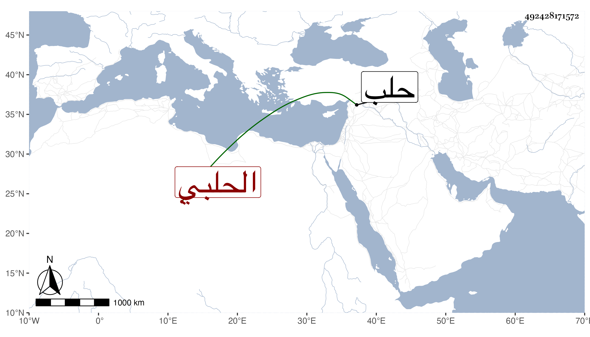

0902Sakhawi.DawLamic.ITO20230111-ara1.EIS1600.492428171572
Biography ID: 492428171572
168
خديجة ابنة عمر بن محمد بن عمر بن محمد بن الضياء محمد بن عثمان أم الفضل ابنة الكمال أبي حفص بن الشمس بن الكمال بن الضياء بن العجمي الحلبي ولدت في ربيع الآخر سنة خمس وتسعين وسبعمائة بحلب وسمعت من ابن صديق الكثير من الصحيح وجميع ثلاثيات الدارمي ، وحدثت سمع منها الفضلاء أخذت عنها وكانت دينة خيرة دمثة الاخلاق كريمة أصيلة . ماتت قريب الستين تقريبا .
